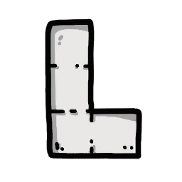
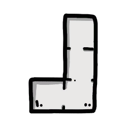
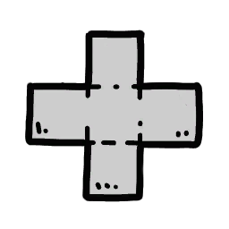
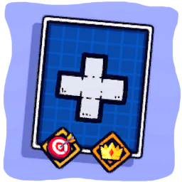

Dựng mê cung (khối Tetris)
Cơ chế đặc trưng của Emberward: người chơi kéo thẻ khối (Block card, eCardType.PANEL_CARD) hình Tetris lên lưới để chặn/kéo dài đường đi của quái (A* Pathfinding, FloodPath).
Mô tả
- Cơ chế đặc trưng của Emberward: người chơi kéo thẻ khối (Block card, eCardType.PANEL_CARD) hình Tetris lên lưới để chặn/kéo dài đường đi của quái (A* Pathfinding, FloodPath). Không được chặn hoàn toàn đường (BLOCKED_PATH). Khối đặt trong giai đoạn chuẩn bị có thể thu hồi (giữ chuột) cho tới khi battle bắt đầu thì bị khoá; tháp chỉ xây được trên khối. 42 hình khối (15 chuẩn + 23 twisted + 4 mechanic), mỗi khối 1–9 ô, có rune slot theo số ô.
- Thẻ khối trong tay → kéo ra sân: ObjectPlacementHandler.OnStartPlacement tạo placementDemoObject, Update() bám chuột/joystick (GetMouseGridPosition), CheckPlacementBlocking mỗi khi đổi ô: CheckGroundExistAtPositon, CheckIsPlacementOccupiedAtPositon, CheckIsInEnemyTerritory, CheckIsWholeObjectInVision (Candle Flame), CheckTooCloseToPlayerOrigin, MapManager.CheckPathBlockedByObject (FloodPath thử) → ePlacementStatus (AVALIABLE / NOT_ENOUGH_COIN / BLOCKED_PATH / OVERLAP_OBJECT / NO_SUITABLE_BASE / NO_GROUND / NOT_IN_VISION). Confirm → Obj_TetrisBlock spawn, GridSystem.RegisterTetris, OnTetrisPlaced, OnGraphUpdated → MonsterSpawner.RecalculatePath; rune trên thẻ tạo buff tile (APowerGrid) dưới khối. Trước khi battle: giữ chuột trên khối → OnTetrisRecall trả thẻ về tay; RequestChangeBattleState(true) → TetrisManager.LockLastPlacedTetris → OnTetrisLocked (khoá vĩnh viễn, cập nhật lãnh thổ). Ở Frost Ruins khối tự đóng băng sau 3 vòng (roundSinceFreezeStart>2 → isFrozen); lava tile biến khối thành dung nham; void tile nuốt khối; corrupted tile cấm đặt.
Sơ đồ
Hình minh hoạ






Lưu ý
Mở khóa & điểm vào
Có từ tutorial BUILD_TETRIS (eTutorialType 1). Bộ khối khởi đầu chọn ở Academy (TetrisStarterSetData: 7 thẻ theo bộ có trọng số).
Điểm vào:
- Kéo thẻ khối từ tay bài (UI_DraggableCard) → RequestStartPlacement
- Phím ROTATE_BLOCK / ROTATE_BLOCK_INV xoay
- Nút Recall Block (setting RECALL_BLOCK_BUTTON) hoặc giữ chuột trên khối
- Ctrl+click: Draw Path (Obj_DrawSystem) để vẽ kế hoạch
Cách hoạt động
- Đặt khối: RequestStartPlacementWithCardData(prefab, cardData) → Update: SetDemoObjectToMousePos; OnGridInputControlCellChanged → CheckPlacementBlocking → UpdateCheckTetrisPlaceable: đất tồn tại, không đè vật, không trong lãnh thổ địch, đường không bị chặn → ConfirmPlacement → Obj_TetrisBlock.OnPlacement, GridSystem.RegisterTetris, IngameData.OnRequestRemoveCardFromHand (Quy tắc: Khối miễn phí (baseCost không trừ); kh
- Thu hồi khối: OnTetrisRecall → RequestRecallBlockCard(TetrisCardData) → IngameData.OnRequestRecallBlockCard: thẻ về tay (giữ rune) → GridSystem.UnregisterTetris; graph cập nhật (Quy tắc: Sau khi battle bắt đầu khối bị khoá (BUILD_TETRIS_DESC); skill Unlock (talent SKILL_UNLOCK, buff 3032) mở khoá 1 khối mỗi vòng; Unfreeze (3034) rã băng)
- Khoá khối khi bắt đầu battle: TetrisManager.LockLastPlacedTetris(forceUpdateTerritory) → Obj_TetrisBlock.isFirstRoundAfterPlacement=false; roundSincePlacement++ mỗi OnRoundEnd → GridSystem.UpdateTerritory: khối đã khoá cạnh lãnh thổ địch → chiếm về phía người chơi (tutorial TERRITORY) (Quy tắc: Shard Corrupt L3: mọi ô cạnh corrupted tile thành lãnh thổ địch)
- Đóng băng / dung nham / void: Frost: roundSinceFreezeStart tăng mỗi vòng; ==2 cảnh báo, >2 → isFrozen=true, isLockedByPowerGrid=true (tháp không đặt/thu hồi) → Lava tile: isLava=true, khối thành magma (không thu hồi, không đặt tháp) → Void tile: khối bị nuốt, tạo đất (VOID_ZONE tutorial) → Blazing Brazier / Snow Brazier / Purification Potion / Unfreeze card gỡ hiệu ứng (Quy tắc: 3 vòng sau khi đặt thì đóng băng (FREE
- Gắn rune vào thẻ khối: GetSocketCount theo blockCount (nhiều ô = nhiều slot, BLOCK_RUNES_DESC) → AddRune(eItemType 5001–5036) hoặc AddSpecialRune (Astral: Solar/Lunar/Stellar với Scholar) → Khi đặt khối: rune sinh APowerGrid tương ứng (RuneSettingData.powerGridSettingData) hoặc hiệu ứng tức thời (Inspiration, Scrap, Mega, Trap, Slime, Shapeshift) (Quy tắc: Hiệu ứng buff tile giảm theo kích thước tháp (2x2 chỉ 1/4, BU
- Đặt khối bằng tay cầm / vẽ đường: Obj_GridInputControl: MOVE_X/Z_AXIS di chuyển ô, CONFIRM/CANCEL, ROTATE_BLOCK → Obj_DrawSystem: Ctrl+LMB vẽ đường, Ctrl+Shift lưới, Ctrl+RMB xoá (DRAW_SYSTEM_DESCRIPTION) → Setting SHOW_PATH_LENGTH hiện độ dài đường dài nhất; CURSOR_SUPPORT_LINE
Luồng chi tiết theo code
Thẻ khối trong tay → kéo ra sân: ObjectPlacementHandler.OnStartPlacement tạo placementDemoObject, Update() bám chuột/joystick (GetMouseGridPosition), CheckPlacementBlocking mỗi khi đổi ô: CheckGroundExistAtPositon, CheckIsPlacementOccupiedAtPositon, CheckIsInEnemyTerritory, CheckIsWholeObjectInVision (Candle Flame), CheckTooCloseToPlayerOrigin, MapManager.CheckPathBlockedByObject (FloodPath thử) → ePlacementStatus (AVALIABLE / NOT_ENOUGH_COIN / BLOCKED_PATH / OVERLAP_OBJECT / NO_SUITABLE_BASE / NO_GROUND / NOT_IN_VISION). Confirm → Obj_TetrisBlock spawn, GridSystem.RegisterTetris, OnTetrisPlaced, OnGraphUpdated → MonsterSpawner.RecalculatePath; rune trên thẻ tạo buff tile (APowerGrid) dưới khối. Trước khi battle: giữ chuột trên khối → OnTetrisRecall trả thẻ về tay; RequestChangeBattleState(true) → TetrisManager.LockLastPlacedTetris → OnTetrisLocked (khoá vĩnh viễn, cập nhật lãnh thổ). Ở Frost Ruins khối tự đóng băng sau 3 vòng (roundSinceFreezeStart>2 → isFrozen); lava tile biến khối thành dung nham; void tile nuốt khối; corrupted tile cấm đặt.
Phần thưởng
Thưởng
| Ngữ cảnh | Thưởng | Bằng chứng |
|---|---|---|
| Đặt khối có Inspiration Rune | Rút 1 thẻ | RuneSettingData 5008 |
| Scrap Rune | Tới 5 Scrap Tower miễn phí trên khối (10 với Mega) | Runes loc _5015 |
Phần thưởng theo code
| Ngữ cảnh | Phần thưởng | Evidence |
|---|---|---|
| Đặt khối có Inspiration Rune | Rút 1 thẻ | RuneSettingData 5008 |
| Scrap Rune | Tới 5 Scrap Tower miễn phí trên khối (10 với Mega) | Runes loc _5015 |
Số liệu chính
| Chỉ số | Giá trị | Nguồn |
|---|---|---|
| PanelSettingData (42) | 15 hình chuẩn (L, L_INV, Z, Z_INV, I, SQUARE, T, LARGE_T, DOT, LARGE_L, I_5, SMALL_L, W, X, 2_DOT) 1–5 ô; 23 twisted (isTwisted) 2–5 ô; 4 mechanicOnly: 2x3, 3x3, 1x7, 1x3 | Resources/paneldata; appendix/runes-tiles-blocks.md |
| TetrisStarterSetData | 7 bộ 7 thẻ: cơ bản (w5: L,L_INV,Z,Z_INV,I,SQUARE,T), nâng cao (w2: LARGE_T,DOT,LARGE_L,I_5,SMALL_L,W,X), toàn I (w1), toàn L (w1), ngẫu nhiên (w3), L+W (w1), ttTT (w1); bộ riêng cho Tiny (≤3 ô) | Resources/TetrisStarterSetData.asset |
| freeze rounds | 3 | Obj_TetrisBlock (roundSinceFreezeStart > 2) |
| PATH_RECOVERY_DELAY | 0.5 | MapManager |
| ePlacementStatus | ORIGINAL, AVALIABLE, NOT_ENOUGH_COIN, BLOCKED_PATH, OVERLAP_OBJECT, NO_SUITABLE_BASE, DISABLED, NO_GROUND, NOT_IN_VISION | enum |
| TetrisSkinSettingData | 18 skin: Default 0, Wood/Metal/Tiramisu/Totem/Stone/Brick/Drum 300, Crystal/Neon 500, Cosmic 2500, Golden Box 3750, Dice 777, Metal Dice 100 (Jelly/Slime/Wood Box tắt) | Resources/TetrisSkinSettingData.asset |
| GetRandomNumberOfConnections | 2 (95 %) / 3 (5 %) | Map.GetRandomNumberOfConnections |
Ghi chú thiết kế
- Lưu trữ: list_ItemStorage (TetrisCardData: itemType, seed, list_Runes, specialRune)
Use case (6)
Bấm vào từng use case để mở. Mở/đóng tất cả
UC-01 Đặt khối
Các bước- RequestStartPlacementWithCardData(prefab, cardData)
- Update: SetDemoObjectToMousePos; OnGridInputControlCellChanged → CheckPlacementBlocking
- UpdateCheckTetrisPlaceable: đất tồn tại, không đè vật, không trong lãnh thổ địch, đường không bị chặn
- ConfirmPlacement → Obj_TetrisBlock.OnPlacement, GridSystem.RegisterTetris, IngameData.OnRequestRemoveCardFromHand
- EventMgr OnTetrisPlaced → cập nhật graph A* (OnGraphUpdated) và đường quái (OnMonsterPathUpdated)
| Actor | Player |
|---|---|
| Trigger | Kéo thẻ khối, click xác nhận |
| Điều kiện | Trạng thái NORMAL_MODE hoặc battle (được đặt trong battle, LOADING_TIP_14) |
| Kết quả | Khối trên sân, thẻ rời tay, đường quái tính lại; Inspiration Rune: rút 1 thẻ và khoá ngay |
| Quy tắc / số liệu | Khối miễn phí (baseCost không trừ); không được chặn hết đường (ePlacementStatus.BLOCKED_PATH); Blessed Chisel (4070) bỏ qua vật cản; Shard Player L2: sau 2 khối rút, khối tiếp theo bị twisted |
| Evidence | ObjectPlacementHandler.OnConfirmPlacement; ObjectPlacementHandler.UpdateCheckTetrisPlaceable; MapManager.CheckPathBlockedByObject; Obj_TetrisBlock.OnPlacement |
UC-02 Thu hồi khối
Các bước- OnTetrisRecall → RequestRecallBlockCard(TetrisCardData)
- IngameData.OnRequestRecallBlockCard: thẻ về tay (giữ rune)
- GridSystem.UnregisterTetris; graph cập nhật
| Actor | Player |
|---|---|
| Trigger | Giữ chuột trên khối (TetrisClickHandler) hoặc nút Recall |
| Điều kiện | Chưa battle trong vòng này, khối không isFrozen/isLava/isLockedByPowerGrid, không có tháp trên khối |
| Kết quả | Thẻ trở lại tay bài |
| Quy tắc / số liệu | Sau khi battle bắt đầu khối bị khoá (BUILD_TETRIS_DESC); skill Unlock (talent SKILL_UNLOCK, buff 3032) mở khoá 1 khối mỗi vòng; Unfreeze (3034) rã băng |
| Evidence | Obj_TetrisBlock.OnRemove; IngameData.OnRequestRecallBlockCard; TetrisManager.LockLastPlacedTetris; UnlockBuff |
UC-03 Khoá khối khi bắt đầu battle
Các bước- TetrisManager.LockLastPlacedTetris(forceUpdateTerritory)
- Obj_TetrisBlock.isFirstRoundAfterPlacement=false; roundSincePlacement++ mỗi OnRoundEnd
- GridSystem.UpdateTerritory: khối đã khoá cạnh lãnh thổ địch → chiếm về phía người chơi (tutorial TERRITORY)
| Actor | System |
|---|---|
| Trigger | RequestChangeBattleState(true) |
| Kết quả | Khối vĩnh viễn; lãnh thổ mở rộng |
| Quy tắc / số liệu | Shard Corrupt L3: mọi ô cạnh corrupted tile thành lãnh thổ địch |
| Evidence | TetrisManager.LockLastPlacedTetris; GridSystem.UpdateTerritory; Obj_TetrisBlock.OnRoundEnd |
UC-04 Đóng băng / dung nham / void
Các bước- Frost: roundSinceFreezeStart tăng mỗi vòng; ==2 cảnh báo, >2 → isFrozen=true, isLockedByPowerGrid=true (tháp không đặt/thu hồi)
- Lava tile: isLava=true, khối thành magma (không thu hồi, không đặt tháp)
- Void tile: khối bị nuốt, tạo đất (VOID_ZONE tutorial)
- Blazing Brazier / Snow Brazier / Purification Potion / Unfreeze card gỡ hiệu ứng
| Actor | System |
|---|---|
| Trigger | OnRoundEnd hoặc đặt lên tile đặc biệt |
| Điều kiện | Frost Ruins (FREEZING_ZONE), CORRUPTED_FREEZE/LAVA/VOID tile, Shard, boss Skeleton King |
| Kết quả | Khối đổi trạng thái vật lý và khả năng xây |
| Quy tắc / số liệu | 3 vòng sau khi đặt thì đóng băng (FREEZING_ZONE_DESC); Mega Rune miễn nhiễm corrupted tile |
| Evidence | Obj_TetrisBlock (roundSinceFreezeStart==2 / >2, isFrozen, isLava); Obj_FreezeGrid; Obj_LavaGrid; Obj_VoidGrid; LavaGridManager |
UC-05 Gắn rune vào thẻ khối
Các bước- GetSocketCount theo blockCount (nhiều ô = nhiều slot, BLOCK_RUNES_DESC)
- AddRune(eItemType 5001–5036) hoặc AddSpecialRune (Astral: Solar/Lunar/Stellar với Scholar)
- Khi đặt khối: rune sinh APowerGrid tương ứng (RuneSettingData.powerGridSettingData) hoặc hiệu ứng tức thời (Inspiration, Scrap, Mega, Trap, Slime, Shapeshift)
| Actor | Player |
|---|---|
| Trigger | Workshop ENGRAVE / thưởng rune / character skill |
| Điều kiện | TetrisCardData.HasEmptySocket |
| Kết quả | Buff tile dưới khối; tháp đặt lên nhận stat |
| Quy tắc / số liệu | Hiệu ứng buff tile giảm theo kích thước tháp (2x2 chỉ 1/4, BUFF_GRID_DESC, doDecreaseEffectWithTowerSize) |
| Evidence | TetrisCardData.AddRune/GetSocketCount; ARune; RuneSettingData; APowerGrid.OnPowerGridApply |
UC-06 Đặt khối bằng tay cầm / vẽ đường
Các bước- Obj_GridInputControl: MOVE_X/Z_AXIS di chuyển ô, CONFIRM/CANCEL, ROTATE_BLOCK
- Obj_DrawSystem: Ctrl+LMB vẽ đường, Ctrl+Shift lưới, Ctrl+RMB xoá (DRAW_SYSTEM_DESCRIPTION)
- Setting SHOW_PATH_LENGTH hiện độ dài đường dài nhất; CURSOR_SUPPORT_LINE
| Actor | Player |
|---|---|
| Trigger | Joystick hoặc Ctrl+click |
| Kết quả | Hỗ trợ kế hoạch mê cung |
| Evidence | ObjectPlacementHandler.SetDemoObjectToJoystickPos; Obj_DrawSystem; SettingsManager.ShowLongestPathLength |
Cấu hình (7)
Gộp mọi nguồn: const trong code, JSON mặc định trong Resources, bảng static, storage key, AB test, cờ server.
| Nguồn | Key | Kiểu | Giá trị | Ý nghĩa | Nơi định nghĩa |
|---|---|---|---|---|---|
| asset | PanelSettingData (42) | list | 15 hình chuẩn (L, L_INV, Z, Z_INV, I, SQUARE, T, LARGE_T, DOT, LARGE_L, I_5, SMALL_L, W, X, 2_DOT) 1–5 ô; 23 twisted (isTwisted) 2–5 ô; 4 mechanicOnly: 2x3, 3x3, 1x7, 1x3 | Hình khối, storeCost 15–40 trong shop | Resources/paneldata; appendix/runes-tiles-blocks.md |
| asset | TetrisStarterSetData | list | 7 bộ 7 thẻ: cơ bản (w5: L,L_INV,Z,Z_INV,I,SQUARE,T), nâng cao (w2: LARGE_T,DOT,LARGE_L,I_5,SMALL_L,W,X), toàn I (w1), toàn L (w1), ngẫu nhiên (w3), L+W (w1), ttTT (w1); bộ riêng cho Tiny (≤3 ô) | Bộ khối khởi đầu ở Academy | Resources/TetrisStarterSetData.asset |
| code const | freeze rounds | int | 3 | Frost Ruins: khối đóng băng sau 3 vòng | Obj_TetrisBlock (roundSinceFreezeStart > 2) |
| code const | PATH_RECOVERY_DELAY | float | 0.5 | Trễ khôi phục graph A* sau khi đặt/thu hồi | MapManager |
| code const | ePlacementStatus | enum | ORIGINAL, AVALIABLE, NOT_ENOUGH_COIN, BLOCKED_PATH, OVERLAP_OBJECT, NO_SUITABLE_BASE, DISABLED, NO_GROUND, NOT_IN_VISION | Trạng thái hợp lệ khi đặt | enum |
| asset | TetrisSkinSettingData | list | 18 skin: Default 0, Wood/Metal/Tiramisu/Totem/Stone/Brick/Drum 300, Crystal/Neon 500, Cosmic 2500, Golden Box 3750, Dice 777, Metal Dice 100 (Jelly/Slime/Wood Box tắt) | Skin khối mua bằng Ember Stone (unlockCost) | Resources/TetrisSkinSettingData.asset |
| code const | GetRandomNumberOfConnections | int | 2 (95 %) / 3 (5 %) | (map) số nhánh nối mỗi node — xem WorldMap | Map.GetRandomNumberOfConnections |
Giao diện (UI)
| Element | Class | Mục đích |
|---|---|---|
| Thẻ khối trong tay | UI_DraggableCard / UI_Obj_WallCard / UI_Obj_TetrisCardRune | Kéo thả, hiện rune slot |
| Chỉ báo đặt | Obj_PlacementBlockIndicator / Obj_PlacementEffect | Ô hợp lệ/không hợp lệ, hiệu ứng |
| Lỗi đặt | UI control tip | UI_ToggleControlTipError_PathBlocked / NotEnoughCoin / InEnemyTerritory |
Storage keys
list_ItemStorage (TetrisCardData: itemType, seed, list_Runes, specialRune)
Chưa đọc được / ghi chú
- Kích thước lưới mỗi scene nằm trong file scene (EnvScene_*.unity), không trong SO
- Số rune slot theo số ô (GetSocketCount) chưa đọc hằng — loc chỉ nói 'nhiều ô = nhiều rune'
- Trọng số chọn twisted block khi anomaly TWISTED_BLOCKS chưa đọc
Tính năng liên quan
Rune & buff tile (PowerGrid) Tháp (Towers) Cơ chế màn theo world Thẻ, deck & rút bài Shop, Workshop, Campsite & Altar
Nguồn đã đọc
- features/ObjectPlacementHandler.md
- features/GridSystem.md
- features/TetrisManager.md
- PseudoC/Asmdef_Emberward/Obj_TetrisBlock.c
- appendix/runes-tiles-blocks.md
- facts/so_by_class/TetrisStarterSetData.jsonl